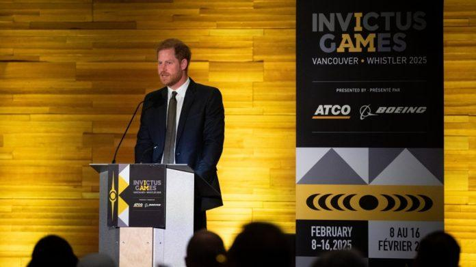

在哈里王子和梅根·马克尔二月份短暂访问BC省期间，温哥华警方的加班费超过 44,000元。
苏塞克斯公爵和公爵夫人于 2 月 14 日至 16 日在温哥华和惠斯勒停留了三天，以宣传“不可征服运动会”，该运动会将于 2025 年 2 月再次在BC省举行。哈里王子于 2014 年为受伤、患病的军人和退伍军人创办了这项综合运动会。
根据通过信息自由请求获得的数据，温哥华警方在这次短暂的访问中花费了 44,555 元用于安全相关的加班。
虽然不可征服运动会方面支付了10,221 加元，但加拿大纳税人仍需支付 34,333 加元的加班费。这笔钱是 390.5 个工作小时的费用。这些费用被描述为“警察安全加班费”。
温哥华警察局发言人在给 CTVNews的电子邮件中补充道：“我们没有专门为他们提供安全保障。但我们在他们所在的区域安排了警力，以防因该市正在进行的抗议活动而出现任何问题。”
二月份时温哥华爆发了多起抗议活动，包括支持巴勒斯坦人和锡克教独立的集会。
2025 年温哥华惠斯勒不可征服运动会安全总监道格·梅纳德 (Doug Maynard) 在向 CTVNews发表的声明中表示，警方负责公共安全，而哈里王子的安全保障则由私人支付。
“纳税人没有为苏塞克斯公爵和公爵夫人去年 2 月访问期间的安保提供资金；他们的私人安保人员由捐赠者提供的个人捐款支付，” 梅纳德说。“如果当时因城市抗议活动而出现问题，温哥华警方的资源将确保该地区的公共安全。”
加拿大公共安全部于2020年2月宣布，在他们决定放弃弃王室身份后，将停止为哈里和梅根提供皇家骑警安全保障。哈里和梅根在2019 年 11 月至 2020 年 1 月期间在加拿大和温哥华岛度过了几周，皇家骑警曾花费了超过 56,000 元来保护这对夫妇。
哈里王子还一直在试图推翻英国政府 2020 年 2 月取消其皇室安全保护的决定。哈里、梅根和他们的孩子自从放弃王室身份后就一直居住在加利福尼亚州。
（言西早 加通社图）